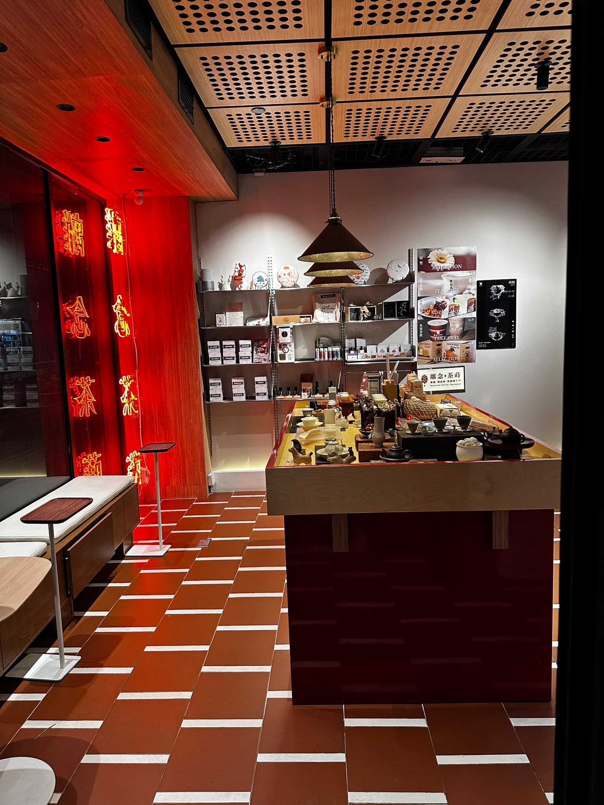
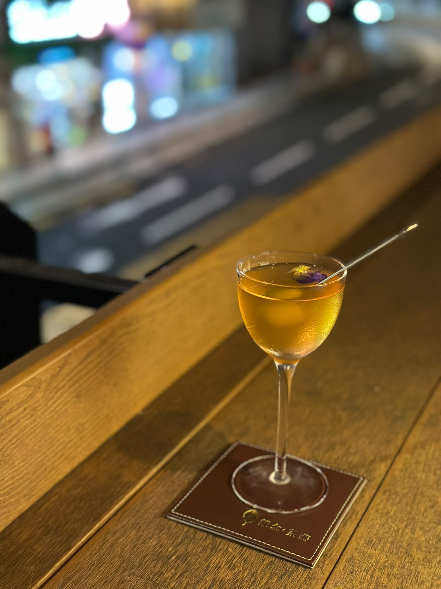

SEG 1 · 0–10s
Sheung Wan · Hong Kong
01 / 03

上環，慢一拍。
Sheung Wan, one beat slower.
SEG 2 · 10–20s · HERO
Tea at the table
02 / 03
一壺茶，倒進飯裡。
Tea, poured slowly into rice.
[魚飯菜名]
SEG 3 · 20–30s · END
By night
03 / 03

停一停
have a pause.
離念・茶蒔
Sheung Wan · Hong Kong
Takeaway G/F · Restaurant & Tea Cocktail 1/F